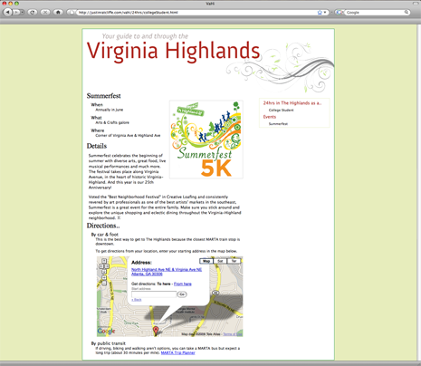
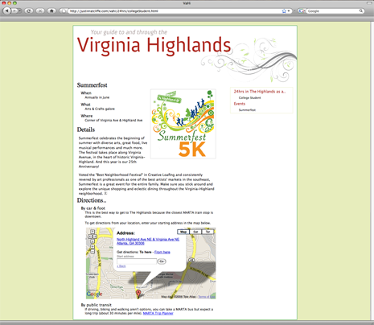
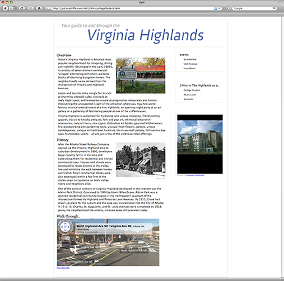
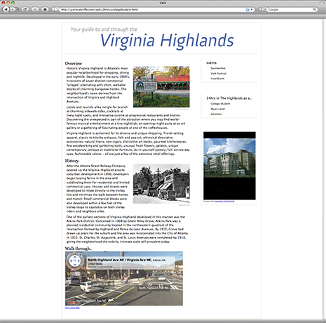

Introducing a Neighborhood
 

 

Context
An assignment in Georgia Tech's Visual Culture + Design course. The goals were to demonstrate knowledge in design grids, typography, and HTML/CSS by choosing an Atlanta neighborhood and detailing it in an online guide.
The project included the research and collection of information regarding the neighborhood, the visual design of the guide, and its implementation in HTML using CSS. The visual design focused on typography, typographic hierarchy, and grid.
Approach
Characterizing a Neighborhood
Having recently moved to the Virginia Highland neighborhood, also referred to as The Highlands, I had a sense of pride and desire to explore my new space. This assignment provided me with an excuse to investigate, analyze, and characterize The Highlands while learning how to convey this through design.
In retrospect, being a part of the culture I was depicting certainly influenced my depiction. Just as Andrew Blauvelt suggested that Ian Anderson's trip to Japan corrupted his naivete of Japanese culture, I had let my knowledge of this space influence my depiction. I was too familiar with it to take only the obvious characteristics; in my case, I was able to ignore those and use what I wanted. It could be argued that I misidentified the culture in this neighborhood by making it an extension of my own personality. By choosing my own living space for this project, I was in fact portraying myself and what I saw myself to be. This became clear in conversation with an Atlantan that had described The Highlands as a modern environment populated by pretentious wealthy twenty-somethings and not the historical, easy going, green neighborhood I wanted it to be.
Defining an aesthetic
Being my first attempt at final design, (as opposed to early design such as content design, layout, and structure) I began by examining my favorite web designs. I have always been fond of how NYTimes.com is styled but could never place the reasons; that is, until I learned the fundamentals of grid, heirarchy, and type. I was able to appreciate a very well designed grid and proper alignment and the prodigious amount of information effectively displayed is something I began to admire.
Richard Buchanan defines successful attributes of good design as usefulness, usability, and desirability. Visual style plays a large part in the second two, however a beautiful website that doesn't serve some utility won't be visited; a balance of all three qualities must be achieved. In this project, I wanted the content to become a utility for visitors and current residents of the neighborhood. To approach this, I included an embedded Google Street View map and also adopted The New York Times 36 Hours theme for travelers. My version lists an entire day of activities for different visitors such as college students.
Process
I began by researching demographics, historic details, and images of the neighborhood. Combining this content into a grid with limited color produced a sterile design. In the second iteration, I broke the grid and began to explore color schemes that were professional and natural.
I view The Highlands as a relaxed community of young professionals and I wanted to choose a layout that subtly displayed this. The grid can be seen in all pages and has been broken in places to relax it slightly. I also took the same approach with the type used for the header. Anivers is a sans-serif typeface that has a sturdy feeling, however is flexible and even funky in some ways.